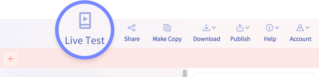

Acesse o site Thunkable e clique em Sign Up. O site permite fazer o cadastro com uma conta Google, Apple ou e-mail pessoal. Em caso de cadastro com e-mail pessoal aguarde receber o e-mail e clique no link do e-mail recebido e conclua o cadastro
O nome do Projeto deve seguir o Padrão: TutorialXX
O projeto é executado no navegador, mas caso deseje executar projeto em seu celular é só baixar o Aplicativo e fazer login em sua conta Tunkable no
App.
No seu computador, clique no botão "Live Test". Agora, quando você fizer alterações no seu aplicativo no
computador, elas serão atualizadas no seu dispositivo móvel.
